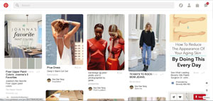

January 31, 11:21 am
Today I am evaulating Pinterest interface base off of Bill Derouchey's article/slideshow on interface design. In this slideshow Derouchey covers the idea of getting inspiration from your everyday objects. With this said, "insipiration fuels design" (Derouchey). He believes that our interactions with objects has language such as color, icons, words size, shape layout, motion sequence sound, and feel. Why are these important? Because they give priority, calirity, and purpose to our designs (Derouchey).
Pinterest is a website that I use on a regular basis for inspiration. I feel that it is straight forward and easy to navigate. The website has a lot of the common navigation tabs and bars that a user is use to using on a web interface. At the very top of the page is where the search bar is. It is good that this search bar was set at the top of the page because Pinterest function is to search titles for photos. Moreover, its navigation icon that serve as a navigation bar has icons that people normally relate to because of the similarity on other sites, for example the profile icon of a human head and bodice. The homepage uses an algorithm to feed the user inspirations from past similar searches and new ones. Overall, I feel that the simplicity of the web page is successful as to what Derouchey explains because under each images, there is a hierarchy of font size. This font size is important because it is able to give you the information you are looking for immediately to see if this image matches your search. The hierarchy of the image being larger than the text is important as well because when a user is searching for inspiration, the user wants to look at images. Not words. There is enough spacing in between images to give a clear layout and priority to each images. Once you intereact with the image, it gives you the opportunity to pin it or look for further details that have similarities to the image. Overall, I say that pinterest is a very successful site that was put together. Over the years I have not seen many changes to the website because it is successful and straight forward. If it to be updated more the in the future, it will be a good change. However, too much change can confuse the user.
January 17, 12:15 pm
For this first blog entry on a user web interface that I admire is the Netflix phone app. I do believe that the app does a great job with laying out everything in an orderly manner. It maintains it's signature color that everyone recognizes it by, red and black. It is simple and informative. Its function is a bit standardize like the search button being on the right corner and the use of the hamburger navigation bar. I feel that netfliz have to do becaue it wants many people to use this app. Using Standardize features makes it easier for a lot of users to connect and understands its functions. Last but not least, the way it categorize its movies list is straight forward and uses an algorithm to pick movies that you as a user would like to watch. This is a concept that I have not understood yet and would like to be ablle to do this too.